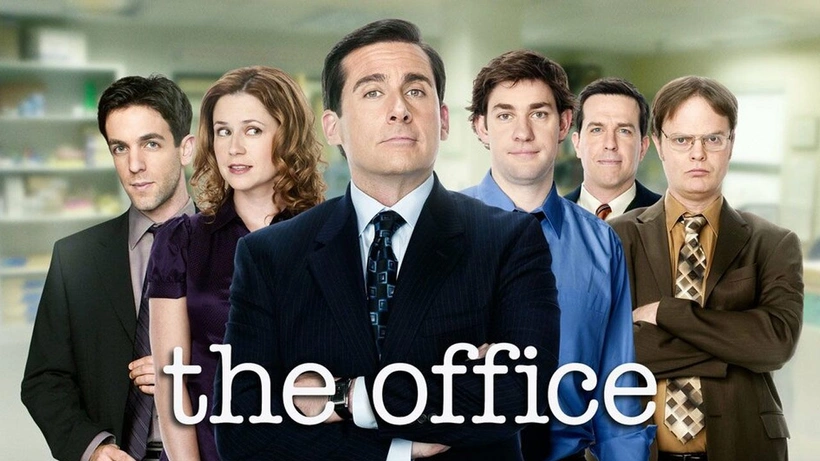

ANA SAYFA
| DİZİ ADI | YAYINLANMA TARİHİ | SEZON SAYISI | IMBD PUANI |
| The Office | 2005-2013 | 9 | 9.0 |
| Friends | 1994- 2004 | 10 | 8.9 |
| Brooklyn Nine-Nine | 2013 - 2021 | 8 | 8.4 |
| How I Met Your Mother | 2005 - 2014 | 9 | 8.3 |
| The Big Bang Theory | 2007 - 2019 | 12 | 8.1 |

"The Office", mizah, dram ve iş yaşamının gerçekçi yansımalarını bir araya getiren, televizyonun en ikonik yapımlarından biridir. Başrolünde, monoton bir ofis hayatını sürdüren Michael Scott ve çalışanları yer alır. Dizi, Scranton'daki bir kağıt şirketinin sıradan çalışanlarının günlük yaşamını konu alırken, komik anlar ve sürpriz gelişmelerle dolu bir ortam yaratır. Michael Scott’un absürt yönetim tarzı ve ofis arkadaşlarının birbirleriyle olan ilişkileri, izleyiciyi hem güldürür hem de duygusal olarak etkiler. "The Office", çalışma hayatının monotonluğuna mizahi bir bakış sunarken, insan ilişkilerinin derinliklerine inerek her bölümde izleyiciyi farklı bir duygusal yolculuğa çıkarır. Bu dizi, sadece bir komedi değil, aynı zamanda karakter gelişimi ve insan psikolojisini ustalıkla işleyen bir televizyon deneyimi sunar. Ve bizim öneri listemizin başında yer alır.